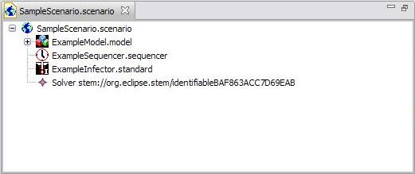

The Scenario editor is used to edit Scenarios. It supports drag and drop, and undo.
A Model can be added to a Scenario by dragging it from either a project's collection of Models, or from the set in the Models View. Similarly, any number of Decorators can be dragged from a project's collection or from the set of Built-in Decorators from the Decorators View or from the Diseases View. As well, a Sequencer can be added to a Scenario by dragging it from a project's collection or from the Sequencers view.
